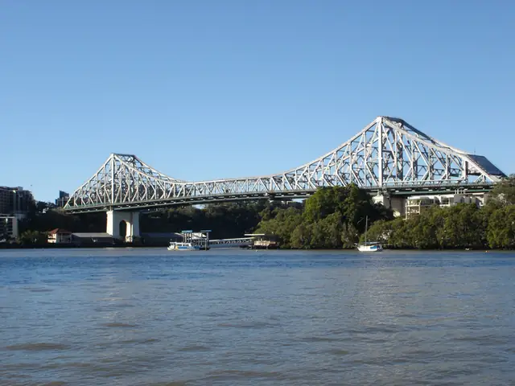
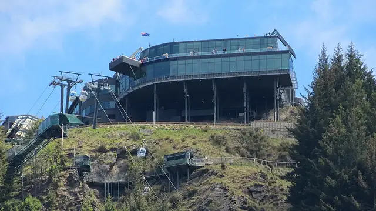

Continent guide · Stamped!
Oceania
Harbor icons and modern landmarks, from the Sydney Opera House to the lakeside town of Queenstown.
- 5Cities
- 37Landmarks
- 2Countries
- 1845Oldest · Customs House
Sydney Opera House: Photo: Bernard Spragg. NZ from Christchurch, New Zealand, CC0, Wikimedia Commons; Eureka Tower: Photo: Phillip Capper, CC BY 2.0, Wikimedia Commons; Sky Tower: Photo: Jorge Royan, CC BY-SA 3.0, Wikimedia Commons
5 cities in Oceania
- AucklandCity of SailsNew Zealand · 5 landmarksPhoto: Jorge Royan, CC BY-SA 3.0, Wikimedia Commons

BrisbaneBrisvegasAustralia · 5 landmarksPhoto: MagpieShooter, CC BY-SA 3.0, Wikimedia Commons- MelbourneCultural CapitalAustralia · 6 landmarksPhoto: Phillip Capper, CC BY 2.0, Wikimedia Commons

QueenstownAdventure CapitalNew Zealand · 4 landmarksPhoto: Bob Linsdell, CC BY 3.0, Wikimedia Commons SydneyEmerald CityAustralia · 17 landmarksPhoto: Bernard Spragg. NZ from Christchurch, New Zealand, CC0, Wikimedia Commons
SydneyEmerald CityAustralia · 17 landmarksPhoto: Bernard Spragg. NZ from Christchurch, New Zealand, CC0, Wikimedia Commons
Other continents
Fly through Oceania in 3D.
All 5 cities, 37 landmarks and a passport stamp for every one you visit. Free on iPhone, iPad, Mac and Apple Vision Pro.
Download on theApp StoreEnjoying the guides? Leave a tip to help keep new cities coming.